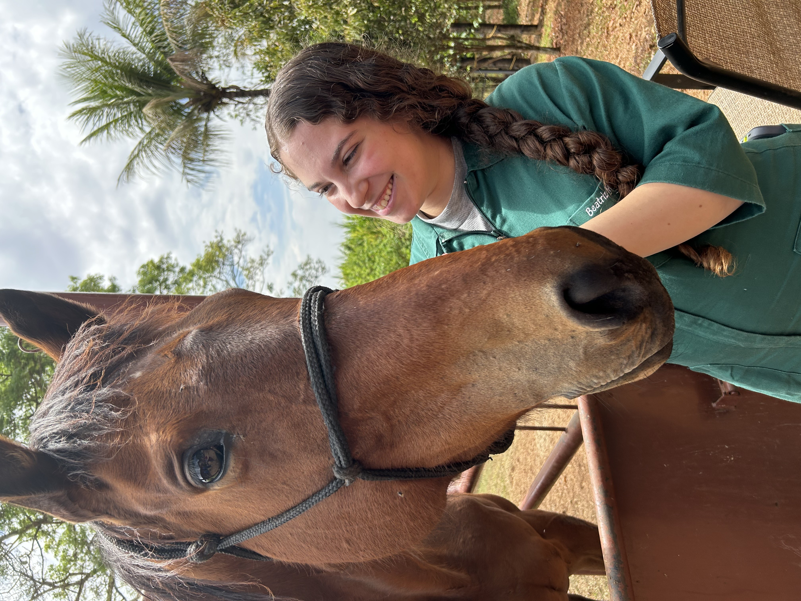

Mais que Pet Sitter: cuidado profissional para a saúde e o bem-estar do seu pet. 🐾
Falar com pet sitter especialista agoraServiços Oferecidos
Visitas Diárias
Cuidados Especiais
Alimentação de Acordo com a Rotina
Administração de Medicamentos
Higiene do Pet e do Ambiente
Passeios
Brincadeiras e Momentos de Diversão
Atualizações por Fotos e Relatórios

Beatriz Pires Mendes Monteiro
Estudante de Veterinária e Pet Sitter de várias espécies.
Olá, muito prazer! Sou Beatriz Monteiro, mas pode me chamar de Bia! Sou estudante de Medicina Veterinária e apaixonada por todos os tipos de animais, desde os peludos até os penudos!
Além de ser mãe de 4 cachorrinhos e tia de 2 gatinhos, encontrei na prática de pet sitter uma forma de unir amor, cuidado e responsabilidade em um só trabalho. Cada visita é feita com carinho e dedicação, porque acredito que todo pet merece se sentir amado e seguro, mesmo quando o responsável não está por perto.
Seja bem-vindo(a) ao meu cantinho cheio de amor, patas e rabinhos abanando!
Entre em contato e solicite um orçamento
 biapmm.13@gmail.com
biapmm.13@gmail.com